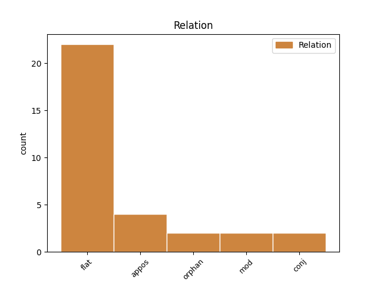
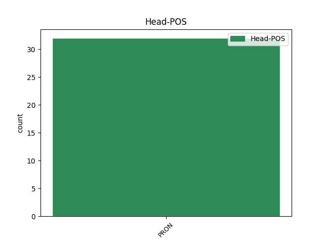
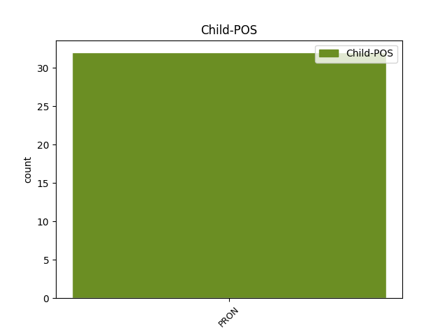

Distribution of features within this leaf



Agreement Rules sorted by frequency.
- When the dependent token is the flat multiword expression(flat) of the head token, and the head token is PRON and the dependent token is PRON.
1 а _ _ _ _ 0 _ _ _
2 самъ _ _ _ _ 0 _ _ _
3 безбожны _ _ _ _ 0 _ _ _
4 съ _ _ _ _ 0 _ _ _
5 всѣми _ _ _ _ 0 _ _ _
6 вои _ _ _ _ 0 _ _ _
7 своими _ _ _ _ 0 _ _ _
8 поиде _ _ _ _ 0 _ _ _
9 въ _ _ _ _ 0 _ _ _
10 врата _ _ _ _ 0 _ _ _
11 с҃тго _ _ _ _ 0 _ _ _
12 романа _ _ _ _ 0 _ _ _
13 кʼ _ _ _ _ 0 _ _ _
14 великои _ _ _ _ 0 _ _ _
15 цр҃кви _ _ _ _ 0 _ _ _
16 в _ _ _ _ 0 _ _ _
17 ню иже PRON Pr Case=Acc|Gender=Fem|Number=Sing|PronType=Rel 0 _ _ _
18 же же PRON Pr Case=Acc|Gender=Fem|Number=Sing|PronType=Rel 17 flat _ ref=317v17
19 бѧхꙋ _ _ _ _ 0 _ _ _
20 събрани _ _ _ _ 0 _ _ _
21 патриарʼхъ _ _ _ _ 0 _ _ _
22 и _ _ _ _ 0 _ _ _
23 весь _ _ _ _ 0 _ _ _
24 клирикʼ _ _ _ _ 0 _ _ _
25 и _ _ _ _ 0 _ _ _
26 нардоу _ _ _ _ 0 _ _ _
27 бесчислено _ _ _ _ 0 _ _ _
28 и _ _ _ _ 0 _ _ _
29 женъ _ _ _ _ 0 _ _ _
30 и _ _ _ _ 0 _ _ _
31 дѣтеи _ _ _ _ 0 _ _ _
1 таче _ _ _ _ 0 _ _ _
2 ꙗко _ _ _ _ 0 _ _ _
3 доиде _ _ _ _ 0 _ _ _
4 града _ _ _ _ 0 _ _ _
5 володимирꙗ _ _ _ _ 0 _ _ _
6 въниде _ _ _ _ 0 _ _ _
7 въ _ _ _ _ 0 _ _ _
8 манастырь _ _ _ _ 0 _ _ _
9 тѹ _ _ _ _ 0 _ _ _
10 сѹщии _ _ _ _ 0 _ _ _
11 близъ _ _ _ _ 0 _ _ _
12 города _ _ _ _ 0 _ _ _
13 иже иже PRON Pr Case=Acc|Gender=Masc|Number=Sing|PronType=Rel 0 _ _ _
14 наричюти _ _ _ _ 0 _ _ _
15 и и PRON Pp Case=Acc|Gender=Masc|Number=Sing|Person=3|PronType=Prs 13 appos _ ref=22
16 ст҃аꙗ _ _ _ _ 0 _ _ _
17 гора _ _ _ _ 0 _ _ _
1 мы _ _ _ _ 0 _ _ _
2 вѣдаѥмъ _ _ _ _ 0 _ _ _
3 ѡже _ _ _ _ 0 _ _ _
4 не _ _ _ _ 0 _ _ _
5 кончати _ _ _ _ 0 _ _ _
6 добром _ _ _ _ 0 _ _ _
7 с _ _ _ _ 0 _ _ _
8 тѣмъ _ _ _ _ 0 _ _ _
9 племенем _ _ _ _ 0 _ _ _
10 ни _ _ _ _ 0 _ _ _
11 вам вы PRON Pp Case=Dat|Gender=Masc|Number=Plur|Person=2|PronType=Prs 0 _ _ _
12 ни _ _ _ _ 0 _ _ _
13 нам мы PRON Pp Case=Dat|Gender=Masc|Number=Plur|Person=1|PronType=Prs 11 conj _ ref=true
14 коли _ _ _ _ 0 _ _ _
15 любо _ _ _ _ 0 _ _ _
1 до _ _ _ _ 0 _ _ _
2 кого къто PRON Pi Case=Gen|Gender=Masc|Number=Sing|PronType=Int 0 _ _ _
3 ти _ _ _ _ 0 _ _ _
4 нас мы PRON Pp Case=Gen|Gender=Masc|Number=Plur|Person=1|PronType=Prs 2 mod _ ref=273.28
5 жалоба _ _ _ _ 0 _ _ _
Disagree Examples:
1 и _ _ _ _ 0 _ _ _
2 билъ _ _ _ _ 0 _ _ _
3 есми _ _ _ _ 0 _ _ _
4 челѡм _ _ _ _ 0 _ _ _
5 василью _ _ _ _ 0 _ _ _
6 папинѹ _ _ _ _ 0 _ _ _
7 да _ _ _ _ 0 _ _ _
8 послѹ _ _ _ _ 0 _ _ _
9 ширвашинѹ _ _ _ _ 0 _ _ _
10 асан _ _ _ _ 0 _ _ _
11 бегѹ _ _ _ _ 0 _ _ _
12 что _ _ _ _ 0 _ _ _
13 есмѧ _ _ _ _ 0 _ _ _
14 с _ _ _ _ 0 _ _ _
15 нимъ _ _ _ _ 0 _ _ _
16 пришли _ _ _ _ 0 _ _ _
17 чтобы _ _ _ _ 0 _ _ _
18 сѧ _ _ _ _ 0 _ _ _
19 печаловалъ _ _ _ _ 0 _ _ _
20 ѡ _ _ _ _ 0 _ _ _
21 людех _ _ _ _ 0 _ _ _
22 что чьто PRON Pr Case=Acc|Gender=Neut|Number=Sing|PronType=Rel 0 _ _ _
23 их и PRON Pp Case=Gen|Gender=Masc|Number=Plur|Person=3|PronType=Prs 22 appos _ ref=4
24 поимали _ _ _ _ 0 _ _ _
25 под _ _ _ _ 0 _ _ _
26 тархы _ _ _ _ 0 _ _ _
27 каитаки _ _ _ _ 0 _ _ _
1 ци _ _ _ _ 0 _ _ _
2 кому къто PRON Pi Case=Dat|Gender=Masc|Number=Sing|PronType=Int 0 _ _ _
3 вас вы PRON Pp Case=Gen|Gender=Masc|Number=Plur|Person=2|PronType=Prs 2 mod _ ref=178.13
4 кто _ _ _ _ 0 _ _ _
5 родинъ _ _ _ _ 0 _ _ _
6 убьенъ _ _ _ _ 0 _ _ _
7 ѿ _ _ _ _ 0 _ _ _
8 сею _ _ _ _ 0 _ _ _
1 ты _ _ _ _ 0 _ _ _
2 ми _ _ _ _ 0 _ _ _
3 ѥси _ _ _ _ 0 _ _ _
4 братъ _ _ _ _ 0 _ _ _
5 а _ _ _ _ 0 _ _ _
6 я я PRON Pp Case=Nom|Gender=Masc|Number=Sing|Person=1|PronType=Prs 0 _ _ _
7 тобѣ ты PRON Pp Case=Dat|Gender=Masc|Number=Sing|Person=2|PronType=Prs 6 orphan _ ref=203.2
1 и _ _ _ _ 0 _ _ _
2 внидемъ _ _ _ _ 0 _ _ _
3 в _ _ _ _ 0 _ _ _
4 роту _ _ _ _ 0 _ _ _
5 а _ _ _ _ 0 _ _ _
6 ты _ _ _ _ 0 _ _ _
7 к _ _ _ _ 0 _ _ _
8 нам _ _ _ _ 0 _ _ _
9 да _ _ _ _ 0 _ _ _
10 ни _ _ _ _ 0 _ _ _
11 вы _ _ _ _ 0 _ _ _
12 начнете _ _ _ _ 0 _ _ _
13 боꙗти _ _ _ _ 0 _ _ _
14 сѧ _ _ _ _ 0 _ _ _
15 насъ _ _ _ _ 0 _ _ _
16 ни _ _ _ _ 0 _ _ _
17 мы мы PRON Pp Case=Nom|Gender=Masc|Number=Plur|Person=1|PronType=Prs 0 _ _ _
18 васъ вы PRON Pp Case=Gen|Gender=Masc|Number=Plur|Person=2|PronType=Prs 17 orphan _ ref=true